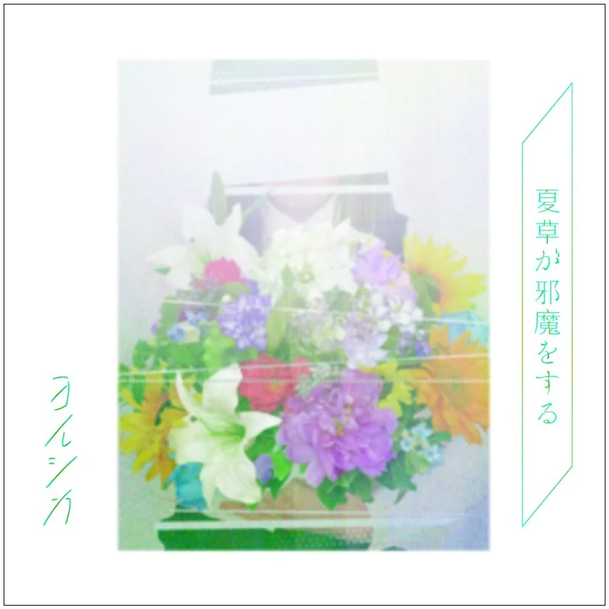

ヨルシカ - 靴の花火
Fireworks of shoes

歌曲背景故事
《靴の花火》的原型取材自日本作家宮澤賢治的童話《夜鷹之星》（よだかの星）。
夜鷹因為外表醜陋而被其他鳥類排擠，最後奮力飛向夜空，燃燒自己化作一顆星。這個淒美的意象，呼應了歌曲中關於告別、救贖與感傷的情感。
官方 MV
精選歌詞與聯想意象
日文
靴の花火って零れ落ちた涙が靴の先の地面に落ちて飛び散った跡のこと。
中文
「鞋尖的煙火」指從眼角滑落的淚水，掉落在鞋尖前的地面上，四散飛濺開來所留下的痕跡。